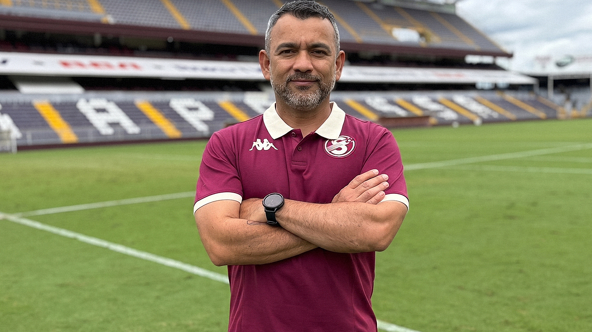

📅 29 Mayo 2026
Por Carlos José Villanueva Ramos

El Deportivo Saprissa anunció el regreso del experimentado preparador físico Erick Sánchez, quien se une al cuerpo técnico del Primer Equipo Masculino de cara al Torneo de Apertura.
Lo que hace especial este fichaje es la trayectoria impresionante de Sánchez — estuvo presente en tres Copas del Mundo con la Selección Nacional de Costa Rica: Brasil 2014, Rusia 2018 y Catar 2022. ¡Tres mundiales! Un profesional de altísimo nivel que regresa a casa.
Su historia con Saprissa viene de lejos — comenzó en las Divisiones Menores de la institución entre 2003 y 2009, donde dio sus primeros pasos en el fútbol profesional.
En esta nueva etapa, Sánchez asumirá la coordinación de toda el área de desarrollo y preparación física de los equipos de la institución. ¡Una incorporación de lujo para el Monstruo Morado! 💜🇨🇷
← Volver al Blog Morado